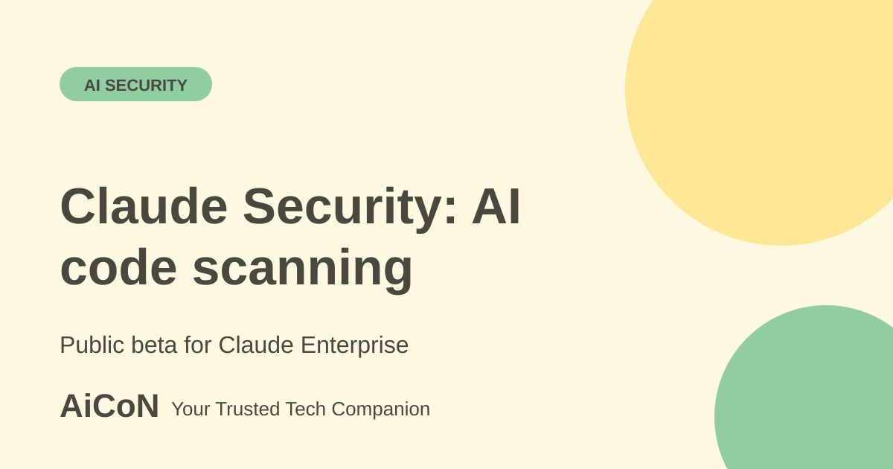

Claude Security: AI code scanning for Enterprise teams
Claude Security is a tool from Anthropic that scans a code repository for security flaws and suggests fixes. It is in public beta for Claude Enterprise, so it is mainly for companies and security teams. A separate plugin for Claude Code is in beta for all Claude Code users.

What is Claude Security?
Claude Security reads a codebase, looks for security problems and proposes patches. Anthropic says it traces data across files and looks for complex, multi-part flaws that rule-based scanners may miss. The official page names the model as Claude Mythos 5.1.
It is built for teams that write software and need to find security bugs before attackers do. If you are a student or a hobby developer, you will probably not see the full app, because it is offered to Claude Enterprise customers.
How it works, according to Anthropic
- Scan. You connect a GitHub repository and Claude scans it. You can limit a scan to one directory and set up scheduled scans.
- Validate. Anthropic says every finding goes through a verification pass in which Claude challenges its own result before showing it. Findings come back with confidence ratings.
- Review and patch. Each finding comes with a suggested patch. Anthropic says teams stay in control, and every patch needs human review and approval.
- Hand off. Findings can go to Slack, Jira or other ticketing tools through webhooks, or be exported as CSV or Markdown. You can open a finding in Claude Code on the web to fix it.
What kind of bugs does it look for?
The page says it focuses on high-severity issues: memory corruption, injection flaws, authentication bypasses and complex logic errors. It does not claim to find every kind of bug.
Who can use it?
| Full Claude Security app | Public beta for Claude Enterprise. Admins enable it in the admin console. Scans on Claude Mythos 5.1 run only in the Claude Security app on Claude.ai. |
|---|---|
| Claude Code plugin | In beta for all Claude Code users. It scans, validates and patches inside Claude Code, and keeps code in your environment. It uses the models available in your Claude Code account, not Mythos. |
| Price | Not listed on the official page. Ask Anthropic or your account team. We give no rupee figure because none is published. |
If you are an individual developer
You can try the Claude Security plugin if you already use Claude Code. Check your own plan's limits first. Start with a small, non-sensitive project. Remember that the plugin does not give you the Mythos scans the app uses.
Why this matters in India and Kerala
Many small software firms, startups and IT service teams in Kerala ship code with few security staff. Tools like this aim to speed up the first review. They do not replace secure design, code review by your own engineers or a proper penetration test. The tool needs access to your repository, so read your company's data policy before you connect client code.
Risks and caveats
- "Fewer false positives" and "finds what scanners miss" are Anthropic's claims. We did not run independent tests.
- The product is in public beta, so features and limits may change.
- A clean scan does not prove code is secure.
What changed since the short post?
The current page describes Enterprise scans on Mythos 5.1 and a separate Claude Code plugin. These have different access and models. Suggested fixes still need human review.
Frequently asked questions
Is Claude Security free?
No free plan is listed. The full app is for Claude Enterprise customers.
Does it fix code by itself?
No. It suggests patches, and Anthropic says each one needs human review and approval.
Does it work with Slack and Jira?
Yes, per Anthropic, through webhooks. You can also export results as CSV or Markdown.
Can I scan only part of a repository?
Yes. The page says you can scope a scan to a directory and schedule recurring scans.
Sources: Claude Security (Anthropic). Checked 6 October 2026.